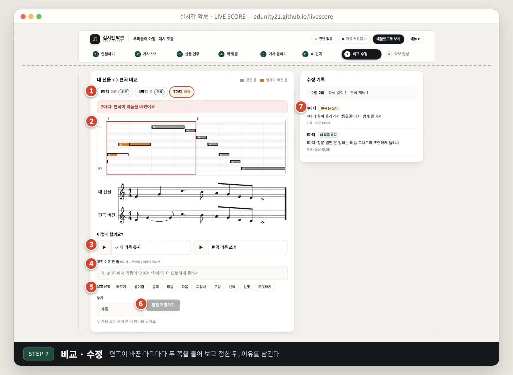

Live Score Platform · Manual
실시간 악보 플랫폼
매뉴얼
AI 음악 생성에서 학생이 손댈 수 있는 곳은 많지 않습니다. 이 플랫폼은 선율·리듬·가사 위치·편곡을 학생이 직접 고치게 합니다. 역할에 맞는 매뉴얼을 고르세요.
1가사 창작2선율 기보3AI 편곡4악보 수정
Teacher's Manual
교사용 매뉴얼
준비물과 교실 배치, 수업 전날 설정, 여덟 단계 운영, 수노·뮤즈스코어 연동, 4차시 운영안, 평가, 문제 해결.
교사용 열기 →https://edunity21.github.io/livescore-manual/teacher.htmlStudent's Guide
학생용 매뉴얼
모둠 역할, 여덟 단계 따라 하기, 고친 이유 쓰는 법, 낱말 은행. 태블릿으로 보기 좋게 만들었어요.
학생용 열기 →https://edunity21.github.io/livescore-manual/student.html




시안 기준 · 플랫폼은 개발 중입니다. 화면의 버튼 이름과 위치는 달라질 수 있습니다.